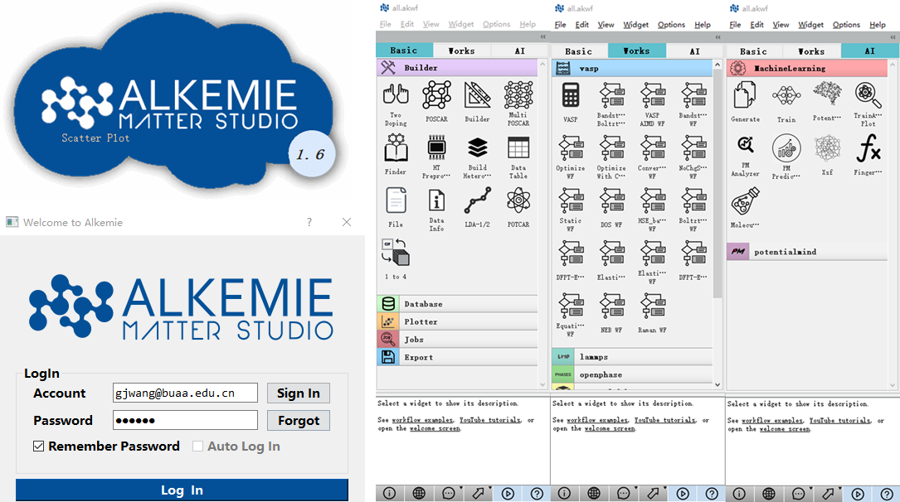

Welcome to User Manual of ALKEMIE Matter Studio¶
When the relationship between the chemical composition and performance of the material is unknown, a new material with a certain specific function often needs to go through a long trial and error process, and often turns up nothing. In the past few decades, with the development of computing power and theoretical physics, material calculation simulation has gradually occupied a dominant position in the design of new materials. Nowadays, with the advent of the era of data-driven materials research and development, in order to accelerate the research and development and design of new materials, combined with multi-type material databases, data mining and machine learning technologies, the development of high-throughput automatic process materials integrated computing algorithms and data management intelligent platforms becomes vital.
{kind=link}
ALKEMIE (Artificial Learning and Knowledge Enhanced Materials Informatics Engineering) is a set of high-throughput automatic process visualization computing and data management intelligent platform developed by the team of Professor Sun Zhimei of Beihang University in 2017 based on the python open source framework. The platform includes applicable three core aspects of the data-driven material research and development model: material high-throughput automatic calculation and simulation, material database and data management, and material data mining based on artificial intelligence and machine learning. In summary, the ALKEMIE high-throughput calculation module can realize the whole process from modeling, operation to data analysis without manual intervention; it supports concurrent high-throughput automatic calculation and simulation with a single user not less than 10^4; ALKEMIE’s multiple types of materials database make data mining technology based on artificial intelligence and machine learning can be quickly applied and practiced in the design and development of new materials through the database’s high-level interface (API). In particular, ALKEMIE has independently developed a special module for cross-scale and large-scale molecular dynamics potential functions based on machine learning. More importantly, ALKEMIE has designed a user-friendly visual operating world to make workflow and data flow more transparent and operable.
The ALKEMIE platform includes three parts: ALKEMIE Matter Studio (MS), ALKEMIE Data Vault (DV) and ALKEMIE Potential Mind (PM). It has a visualized high-throughput automatic process visualization operation interface; from modeling, operation to data analysis, the whole process is automatic without manual intervention; it supports concurrent operations of not less than 1000 for a single user; it can achieve a single scale and cross-scale calculation function; It has a complete 180,000 material science database; strong portability and scalability; It currently supports VASP, LAMMPS, QE and other calculations; It is suitable for all first-principles knowledge masters from elementary to professional Materials researchers.
references¶
Wang G, Peng L, Li K, et al. ALKEMIE: An intelligent computational platform for accelerating
materials discovery and design[J]. Computational Materials Science, 186: 110064.
# Bib Tex
@article{wang186alkemie,
title={ALKEMIE: An intelligent computational platform for accelerating materials discovery and design},
author={Wang, Guanjie and Peng, Liyu and Li, Kaiqi and Zhu, Linggang and Zhou, Jian and Miao, Naihua and Sun, Zhimei},
journal={Computational Materials Science},
volume={186},
pages={110064},
publisher={Elsevier}
}
index：
- Introduction
- Application
- Architecture
- Installation
- High-throughput
examples
- High-throughput 1000-level Calculation Process
- Dynamic Monte Carlo
- First Principles Coupled With Thermodynamics Gibbs
- First-principles And Body Modulus Coupling
- Curie temperature calculation
- Construct vacancy configurations and perform first-principles static calculations
- Construct the doping configuration of phase change materials and perform first-principles static calculations
- Construct the grain boundary configuration of phase change materials and perform first-principles static calculations
- Construct atom configurations of substitution types and perform first-principles static calculations
- Construct tetrahedral and octahedral interstitial atom configurations and perform first-principles static calculations
- Index structure and visualization in 180,000 databases through Finder
- High-throughput Automatic Calculation Process：First-principles Relaxation Calculation
- First-principles Band Calculation
- First-principles Density Of States Calculation
- First-principles HSE Calculation
- First-principles NEB Calculation
- Lammps Relaxation Calculation
- Viewing the multitasking working status of the computing module
- Delete specified task
- Change the high-throughput task queue
- Automatic Analysis of Energy Volume
- Automatic Format Display Of Energy, Volume, Band Gap
- Automatic Statistical Analysis Of Energy, Volume, Band Gap
- Automatic Scatter Plot Distribution Of Energy, Volume, Band Gap
- Density analysis of electrical properties of materials
- Band Diagram Analysis of Electrical Properties of Materials
- OpenPhase Workflow
- Opencalphd Workflow
- Automatically Convert Data
- Automatic Training Model
- Automatic Prediction Based on Model
- Automatically Link Large-scale Molecular Dynamics ASE for Simulation
- Details of
Widgets
- Modeling Controls
- VASP Workflow Control
- Database Control
- Drawing And Analysis Controls
- potentialmind Control
- OpenPhase Control
- Dynamic Controls
- Gibbs Controls
- Jobs Controls
- lammps controls
- qe Control（To be developed）
- abinit control（To be developed）
- calypso control(to be developed)
- Vaspextend control (to be developed)
- Furture